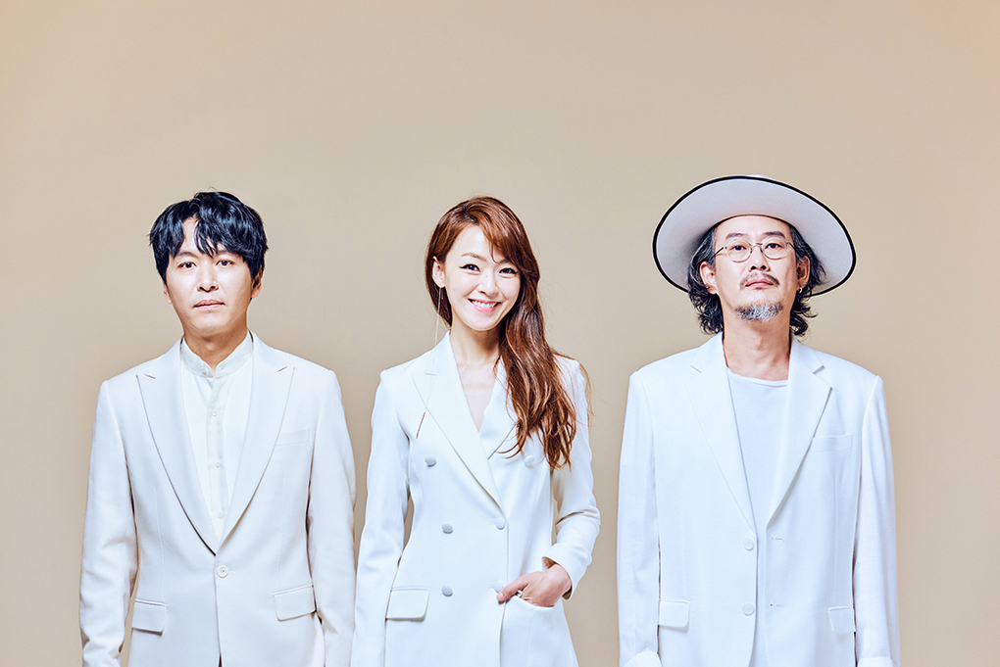

자우림(紫雨林 JAURIM)은 자주빛 비가 내리는 숲이라는 의미로 대한민국의 혼성 3인조 록밴드이다.
2021년 데뷔 24주년을 맞았다. 참고로 2007년에는 데뷔 10주년 기념으로 일 년 동안 아무 작업도 하지 않고 활동을 쉬었으며,[3] 2013년 9집을 발표한 이후로 솔로 작업이나 프로젝트 앨범, 간혹 있는 콘서트 등을 제외하면 잠정휴업상태. 팬들은 2017년 20주년 기념음반 겸 10집이 나올 것으로 예측하고 있었으나, 대신해서 2017년 12월에 20주년 기념 싱글이 나왔다. 정규 10집은 2018년 6월 22일에 발매되었다.
